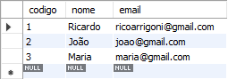
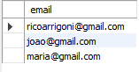
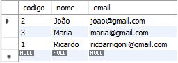
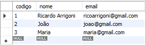
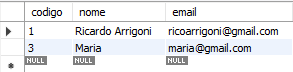

Você conhece os impactos que as suas ações causam no mundo?
Existe uma maneira muito interessante de descobrirmos, que é através da Informática!
Vamos embarcar em uma jornada de criação, alimentação e buscas
em um Banco de Dados, e, de quebra, repensar nossas atitudes do dia-a-dia... Que tal? Preparado?
PASSO 1: A tarefa consiste em você problematizar
temáticas existenciais: sociais (gênero, diversidade, étnico-raciais, desigualdade, etc), políticas (corrupção, inconsistência de leis,
injustiça etc.), ambientais (desmatamento, consumo de carne, testes em animais, poluição de rios etc.) etc.
PASSO 2: Elabore um questionamento relacionado a
temática que você escolher, por exemplo: Quantos hectares da Amazônia já foram desmatados de 1990 até hoje?
PASSO 3: Após feito o questionamento, será
necessário criar e alimentar um Banco de Dados (BD), com tabelas e registros relacionados a temática escolhida, e, então, fazer buscas nesta
tabela a fim de encontrar dados relevantes que respondam a sua pergunta criada no passo 2
PASSO 4: Por fim, faça reflexões sobre o tema, o
questionamento e os resultados obtidos e então crie um texto (de até uma lauda). Você deverá escrever sobre o tema, os resultados obtidos e
propor uma solução, seu objetivo é conscientizar o leitor sobre seus impactos no mundo
PASSO 1: Faça o download do
MySQL Workbench (), que será nosso SGBD (Sistema
de Gerenciamento de Banco de Dados).
Caso tenha dúvidas de como instalar, tem este vídeo
() bem legal explicando passo-a-passo. Configure e deixe tudo funcionando. Vamos utilizar muito
esta ferramenta, ela quem nos retornará as respostas referentes ao questionamento (Passo 2 da TAREFA)
PASSO 2: Aproveita e já vai abrindo o
Portal Brasileiro de Dados Abertos (), que é um site do governo
onde encontramos dados abertos e livres para uso. Então, pesquise uma palavra-chave relacionado ao tema escolhido (exemplo: escolhi a
temática MEIO AMBIENTE, então vou pesquisar DESMATAMENTO)
PASSO 3: escolha o link de sua preferência e
baixe o arquivo .xlsx ou .csv, eles vão ser fonte de criação de TABELAS e inserção de DADOS no Banco de Dados
PASSO 4: Abra o arquivo e veja quais colunas são
relevantes para a busca. As colunas escolhidas serão as tabelas e as linhas serão os registros (dados).
Assim que estiver tudo certinho, podemos partir para a próxima etapa.
A avaliação consistirá em valorizar critérios como: sua criatividade, seu
empenho, aspectos da criação do BD, o tipo de busca escolhida e a profundidade da sua reflexão. A atividade tem valor 10, metade da nota
será relacionada a parte da informática e a outra metade virá da sua reflexão sobre a temática escolhida, ambos têm igual importância na
nossa formação
O que será avaliado?
INFORMÁTICA
Qualidade dos dados inseridos;
Qualidade da construção das tabelas;
Corretude da instrução (query);
Qualidade do retorno das buscas;
Extra: quantidade de buscas corretas.
TEMÁTICA
Criatividade na elaboração do questionamento;
Preocupação com a temática;
Qualidade e veracidade dos dados buscados;
Qualidade, profundidade e capacidade de persuasão da produção textual.
Como instalamos o MySQL Workbench () podemos criar o nosso
primeiro Banco de Dados, utilizar ele e depois criar nossas primeiras TABELAS. A sintaxe de criação de BD é muito fácil:
Passo 1: Criando banco de dados. Comando CREATE DATABASE
CREATE DATABASE bancodeteste;
Em seguida, vamos avisar o SGBD que é esta base de dados recém criada que iremos utilizar:
Passo 2: Usando o banco de dados. Comando USE
USE bancodeteste;
Pronto! Já temos um Banco de Dados criado, agora precisamos criar TABELAS dentro dele.
Passo 3: Criando tabelas. Comando CREATE TABLE
CREATE TABLE fornecedores(
codigo int(4) AUTO_INCREMENT,
nome varchar(30) NOT NULL,
email varchar(50),
PRIMARY KEY (codigo)
);
Tudo certo! Já temos uma tabela chamada fornecedores no nosso bancodeteste, na próxima
aula iremos alimentar esta tabela com dados. Clique em Fechar (abaixo) e abra a nossa aula de número 2: Criar e Manipular
DADOS.
INSERT/UPDATE/DELETE
Agora, vamos partir para a inserção de dados na tabela fornecedores. A instrução é bem simples:
Passo 4: Inserindo Dados. Comando INSERT
INSERT INTO fornecedores(codigo, nome, email) VALUES (null, “Ricardo”, “ricoarrigoni@gmail.com”) ;
INSERT INTO fornecedores(codigo, nome, email) VALUES (null, “João”, “joao@gmail.com”) ;
INSERT INTO fornecedores(codigo, nome, email) VALUES (null, “Maria”, “maria@gmail.com”) ;
Para ver se está tudo ok e ver quais dados se encontram na tabela, utilizamos o comando
SELECT
Passo 5: Usando o comando SELECT
SELECT * FROM fornecedores;
Como resultado desta ação, teremos:

O * (asterisco) indica que estamos selecionando tudo o que existe na tabela, no nosso caso as 3
colunas (codigo, nome e e-mail), mas, podemos selecionar apenas uma, ou algumas, delas se quisermos:
Passo 6: Usando o SELECT específico
SELECT email FROM fornecedores;
Ele irá mostrar apenas os dados da coluna e-mail dos fornecedores. Assim:

Podemos também retornar os dados em ordem alfabética ou numérica utilizando o
ORDER BY. Desta forma:
Passo 7: SELECT usando ORDER BY
SELECT * FROM fornecedores ORDER BY nome asc;
Resultando na tabela com os nomes em ordem alfabética ascendente (do menor para o maior):

Vamos agora ao comando UPDATE. Com ele podemos atualizar/editar quaisquer
dados da nossa tabela. Preste atenção na sintaxe do SET e
WHERE:
Passo 8: Editando registros
UPDATE fornecedores SET nome=”Ricardo Arrigoni” WHERE codigo=1;
Então, fazemos o mesmo SELECT do passo 5. No quadro podemos notar que o
nome de "Ricardo"" passa a ser "Ricardo Arrigoni":

Vamos agora ao último passo desta aula: a utilização do comando DELETE.
Como o próprio nome já diz, podemos excluir, definitivamente, qualquer campo da nossa tabela. Vejamos um exemplo:
Passo 9: Deletando dados
DELETE FROM fornecedores WHERE codigo=2;
Que resulta na exclusão de todos os registros de João:

Saiba que o campo que foi deletado não poderá ser recuperado, se quiser terá que criá-lo novamente a partir
do comando INSERT do passo 4!
Feito! Já sabemos agora os comandos básicos de
manipulação de dados e então podemos ir para a terceira aula. Clique em Fechar (abaixo) e abra a nossa aula de número 3:
Buscar DADOS.
Comandos de BUSCA
A partir do que foi aprendido, podemos criar novas tabelas que se relacionam com a tabela fornecedores,
por exemplo: clientes, funcionários, produtos, estoque etc. E depois desta aula você poderá através de BUSCAS conseguir informações
sobre todos estes dados. Vamos começar:
Cláusula WHERE
Com ela podemos filtrar e limitar o número de registros (linhas) retornados pelo SELECT.
Exemplos:
SELECT * FROM clientes
WHERE uf = 'PR';
Este código lista todos os clientes que são do estado do Paraná.
SELECT codigo_venda, data_venda, valor_renda
FROM vendas
WHERE data_venda BETWEEN '01.01.2004' AND '31.12.2004';
Este código retorna todas as vendas realizadas no ano de 2004.
SELECT * FROM pedidos
WHERE data_pedido = 'TODAY' – 15;
E este traz todos os pedidos que foram feitos há quinze dias atrás.
SELECT * FROM fornecedores
WHERE nome LIKE '%Maria%';
Retorna todas as pessoas que tem nome "Maria".
Alias para Tabelas
Quando precisamos fazer buscas em mais de uma tabela, as instruções acabam
ficando bastante extensas e um tanto repetitivas. Uma forma, não obrigatória, é criar Aliases (apelidos) para as tabelas, reduzindo
bastante o código. Exemplo:
SELECT C.codigo, C.nome, C.uf
FROM cidades C
ORDER BY C.nome
Retorna o código, nome e UF de uma determinada cidade. O apelido da tabela cidades é C.
Cláusula INNER JOIN
A cláusula
JOIN é muito importante em um BD, ela permite realizar consultas em duas ou mais
tabelas ao mesmo tempo. Desta forma, podemos ligá-las através de uma chave única, esta chave normalmente é um ID (identificador).
Por exemplo: na tabela clientes possuímos uma chave cli_id, este cliente faz
uma compra que vai ser registrada na tabela de vendas, e nela, o cliente será reconhecido através do seu ID: o
cli_id. Para buscarmos uma informação que está em ambas as tabelas que
contenham este ID, devemos utilizar o JOIN. Lembrando que o
OUTER não precisa necessariamente aparecer na expressão. Exemplo:
SELECT E.nome, P.nome
FROM estados E
JOIN pais P ON E.cod_pais = P.cod_pais;
Retorna o nome do estado e o nome do país através do ID cod_pais.
Função SUM
Soma todos os valores de determinada coluna.
Exemplo:
SELECT SUM(valor)
FROM vendas
WHERE cod_cli = 10;
Retorna o valor total de gastos do cliente de código 10.
Função AVG
Calcula a média de valores armazeados em uma
determinada coluna. Exemplo:
SELECT AVG(idade)
FROM clientes
WHERE num_dependentes = 2;
Retorna a média de idade dos clientes que tem 2 dependentes.
Função COUNT
Retorna o número total de linhas de uma
determinada coluna. Exemplos:
SELECT COUNT(nome)
FROM clientes
WHERE data_cadastro > 'TODAY' – 265;
Retorna a quantidade de clientes que foram cadastrados há 265 dias atrás.
Função COUNT específico:
SELECT COUNT(cidade), COUNT(DISTINCT(cidade))
FROM clientes;
Na primeira coluna retorna o número total de cidades encontradas na tabela e na segunda coluna retorna
o número ttal de cidades únicas encontradas (sem duplicação).
Função MIN
Traz o menor valor armazenado em uma coluna
específica. Exemplo:
SELECT MIN(valor)
FROM vendas;
Retorna o menor valor obtido em alguma venda.
Função MAX
Traz o maior valor armazenado em uma coluna
específica. Exemplo:
SELECT MAX(quantidade)
FROM pedidos
WHERE cod_representante = 1203;
Retorna a quantidade máxima de pedidos feita pelo representante de código 1203.
Cláusula GROUP BY
Com ela, temos mais funcionalidade nas
Funções de Agregação citadas acima, pois, é possível fazermos agrupamentos de linhas. Exemplos:
SELECT C.nome, SUM(V.valor)
FROM clientes C, vendas V
WHERE V.cod_cli = C.cod_cli
GROUP BY C.nome
ORDER BY C.nome;
Retorna o valor de todas as vendas já cadastradas, agrupadas e ordenadas por nome dos clientes.
SELECT R.nome, COUNT(F.nome)
FROM regioes R, fornecedores F
WHERE F.reg_codigo = R.reg_codigo
GROUP BY R.nome
ORDER BY R.nome;
Retorna a quantidade total de forncedores agrupada e ordenada por região.
Cláusula HAVING
Ela também tem o objetivo de trazer
mais funcionalidade as Funções, porém dá algumas condições de parada. Exemplo:
SELECT C.nome, COUNT(V.cod_vendas)
FROM vendas V, clientes C
WHERE V.cod_cli = C.cod_cli
GROUP BY C.nome;
HAVING COUNT(V.cod_vendas) > 15;
Retorna a quantidade total de vendas feitas a clientes que fizeram mais de 15 compras.
Tipos de JOIN
Imagine esta situação:
SELECT M.nome, COUNT(C.codigo)
FROM medicos M
JOIN consultas C ON (C.cod_medico = M.cod_medico)
GROUP BY M.nome;
Esta instrução retorna a quantidade total de consultas feitas pelos médicos cadastrados. A instrução está
correta, porém não retorna os médicos que ainda não tem nenhuma consulta cadastrada. Para resolvermos esta situação devemos
utilizar o JOIN do tipo OUTER JOIN. São
três tipos: LEFT OUTER JOIN: inclui todas as linhas da tabela do lado esquerdo
do JOIN;
RIGHT OUTER JOIN: Inclui todas as linhas do lado direito do
JOIN;
FULL OUTER JOINInclui todas as linhas de ambas as tabelas utilizadas.
Lembrando que o OUTER não precisa necessariamente aparecer na expressão. Exemplo:
SELECT M.nome, COUNT(C.codigo)
FROM medicos M
LEFT JOIN consultas C ON (C.cod_medico = M.cod_medico)
GROUP BY M.nome;
Desta forma, obtemos todos os registros da tabela médicos, ou seja, a que está do lado esquerdo
da expressão JOIN.
SUBQUERY
Ocorre quando utilizamos um
SELECT dentro de outro SELECT que
deve retornar um valor simples ou uma coluna com um conjunto de valores passível para a SELECT
mais externa. Exemplo:
SELECT codigo_produto, descricao_produto, valor_produto
FROM produtos
WHERE codigo_fornecedor IN (
SELECT codigo_fornecedor
FROM fornecedores
WHERE UF = 'RS');
Retorna o código, a descrição e o valor do produto de todos os fornecedores do estado do RS.
Bom, acredito que agora você já tenha uma boa base de conhecimento sobre criação,
manipulação e buscas em um Banco de Dados e já deve estar preparado para fazer a tarefa. Então, mãos na massa,
digo, no teclado!